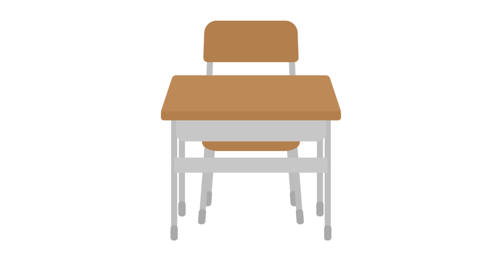

<div class="container">
  <!-- プロフィールセクション（フェードイン: animation-delay で順次表示） -->
  <section class="site-name-toppage fade-in" style="animation-delay: 0.2s;">
    <div class="logo">
      
      <h1>Tooliverse</h1>
    </div>
    <p class="sub-text">無料で簡単に使えるWebツール</p>
  </section>
  
  <div class="section-divider fade-in" style="animation-delay: 0.4s;">
    All Tools
  </div>
  
  <!-- サイト一覧セクション -->
  <section class="sites fade-in" style="animation-delay: 0.6s;">
    <!-- サイトカード1 -->
    <a class="site-card" href="https://hato1198.github.io/mouse-cursor-checker/" target="_blank">
      
      <div class="card-content">
        <h2>マウスカーソルチェッカー</h2>
        <p>13種類のマウスカーソルの見た目をWEB上で簡単にチェックできるサイトです。</p>
      </div>
    </a>
    <!-- サイトカード2 -->
    <a class="site-card" href="https://hato1198.github.io/seat-changer/" target="_blank">
      
      <div class="card-content">
        <h2>ランダム席替えツール</h2>
        <p>くじ引き風の席替えができるサイトです。座席表の自動生成も可能です。</p>
      </div>
    </a>
    <!-- サイトカード3 -->
    <a class="site-card" href="https://hato1198.github.io/" target="_blank">
      
      <div class="card-content">
        <h2>準備中……</h2>
        <p></p>
      </div>
    </a>
  </section>
</div>

<script src="assets/js/script.js"></script>
